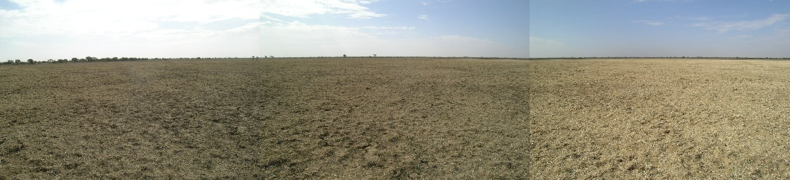
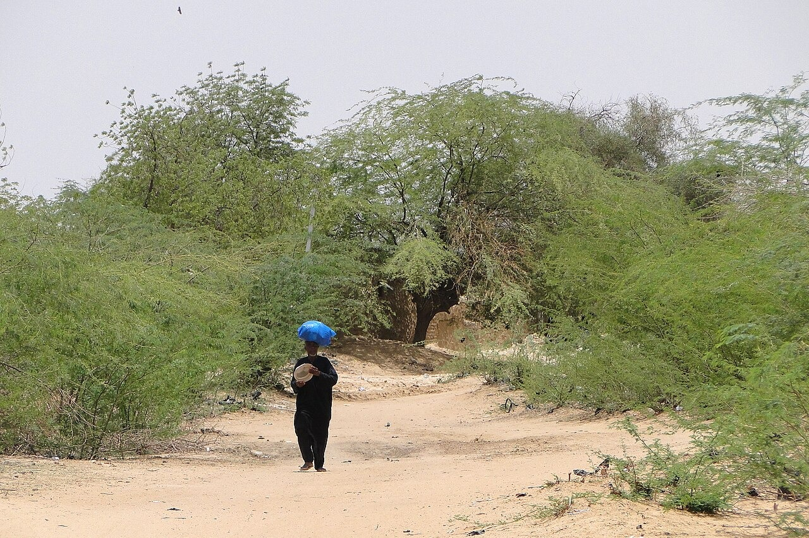
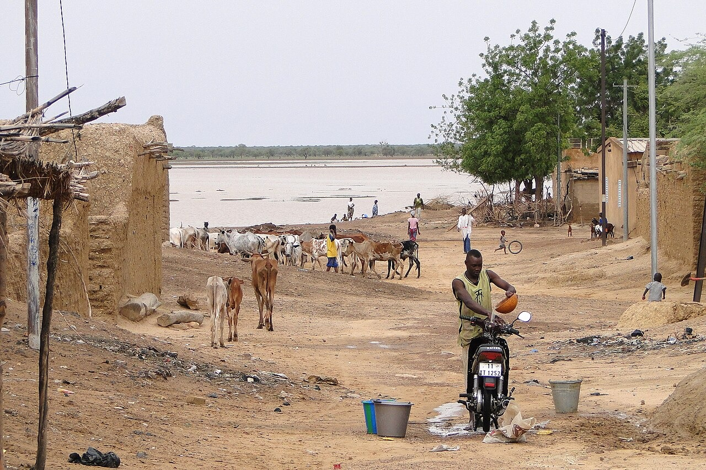

Limites administratives de la région du Soum
« Au cœur de la tradition pastorale du Sahel »
Pays : Burkina Faso
Statut : Région administrative
Départements : 11
Provinces : 2 (Djelgodji, Karo-Péli)
Chef-lieu : Djibo
Création : 2 juillet 2025
Population : 363 661 habitants
Densité : 32,9 hab./km²
Superficie : 12 205 km²
Climat : Sahélien strict (aride)
Présentation
La région du Soum est l'une des 17 régions administratives du Burkina Faso, consacrée par la réorganisation territoriale du 2 juillet 2025. Avec Djibo comme chef-lieu, cette entité fièrement sahélienne englobe les terres historiques du nord, subdivisées en deux provinces phares : le Djelgodji et le Karo-Péli.

L'essence géographique du Soum repose sur d'immenses étendues de savanes arbustives et de plaines arides où l'horizon semble sans fin. Le tapis de graminées séchées et la topographie plane témoignent d'un climat semi-désertique rigoureux, façonné par l'harmattan et la rareté des pluies. C'est le symbole de la résilience du monde pastoral.

Au carrefour des pistes sablonneuses, les acacias et prosopis dressent leurs silhouettes résistantes. Dotés d'un feuillage fin adapté pour limiter l'évaporation et de racines profondes, ils offrent une ombre vitale aux voyageurs et aux grands troupeaux transhumants en quête de fraîcheur.

Les mares et retenues d'eau du Soum constituent les véritables poumons de la région. Lieux de convergence quotidiens, elles accueillent des milliers de zébus pour l'abreuvement, tout en abritant les activités domestiques et le maraîchage local. Ces écosystèmes précieux restent cependant très fragiles face aux risques d'ensablement.

Tourisme & Culture
La région du Soum possède un riche patrimoine archéologique et immatériel lié à l'histoire du royaume du Djelgodji et aux traditions nomades et sédentaires qui s'y croisent.


Ressources naturelles
Le sous-sol de la région du Soum recèle d'importantes réserves minières, notamment aurifères, exploitées de manière artisanale et industrielle. Sur le plan artisanal, la région brille par le travail séculaire du cuir (maroquinerie peule reconnue) ainsi que la vannerie d'une grande finesse.
Potentiel agricole 🌾


Potentiel éducatif 🏫
Le potentiel éducatif du Soum repose sur des écoles primaires, des collèges et lycées d'enseignement secondaire général, ainsi que sur des centres d'Éducation Non Formelle (ENF) dédiées à l'alphabétisation en langues locales. Ce réseau est complété par des structures de formation technique et professionnelle axées sur l'apprentissage des métiers agropastoraux et artisanaux de la région
Potentiel commercial 🛒

Le marché à bétail de Djibo constitue l'un des carrefours d’exportation majeurs de l'Afrique de l'Ouest pour les bovins et petits ruminants. Les flux s'articulent également avec les marchés hebdomadaires d'Arbinda et de Koutougou, alimentant les filières de la maroquinerie, de la vannerie et du maraîchage de pointe.
Carte de situation
Provinces